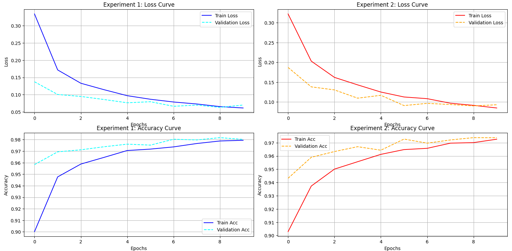

Neural Network Project
MNIST Handwritten Digit Recognition

Aboelyazed Hatem
AI & Deep Learning Track
Problem Description
The objective of this project is to develop a Multilayer Perceptron (MLP) model capable of identifying handwritten digits (0-9) with high precision. This is a multi-class classification challenge using grayscale imagery.
Dataset & Preprocessing
60,000
Training Images
10,000
Testing Images
28x28
Image Resolution
- Normalization: Scaled pixel values from [0, 255] to [0, 1] for gradient stability.
- Flattening: Reshaped 2D matrices into 1D vectors of size 784.
- Validation: Split 20% of training data for real-time monitoring.
Model Architectures
Experiment 1: ReLU Baseline
256 Neurons → 128 Neurons | Activation: ReLU | Regularization: Batch Norm + Dropout (0.3/0.2)
Experiment 2: Tanh Modified
128 Neurons → 64 Neurons | Activation: Tanh | Regularization: Batch Norm + Dropout (0.2/0.1)
Results Comparison
| Experiment | Architecture | Accuracy | Final Loss |
|---|---|---|---|
| Exp 1 BEST | ReLU (256/128) | 97.94% | 0.0695 |
| Exp 2 | Tanh (128/64) | 97.42% | 0.0933 |
Performance Visualization
The curves below demonstrate steady convergence and successful regularization.
